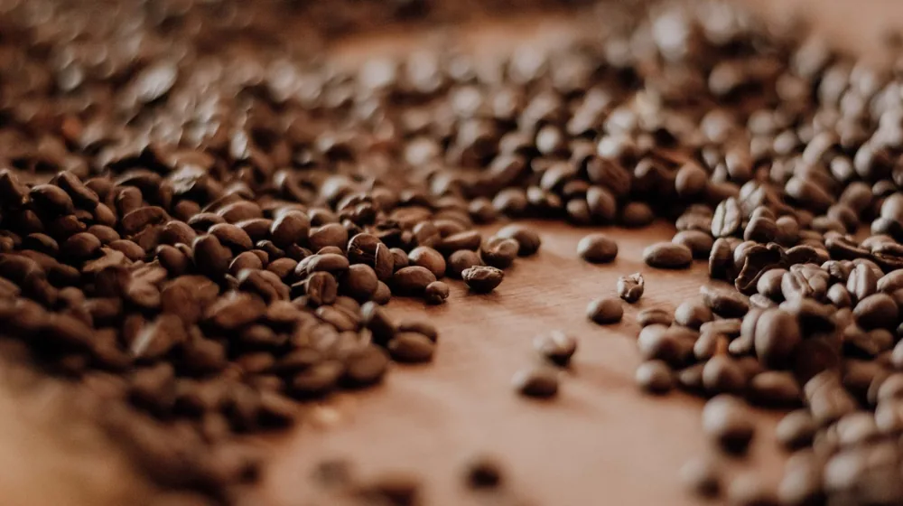

커피 로스팅 단계별 맛 차이: 내 취향 원두 찾는 완벽 가이드
사진: Şinasi Müldür / Pexels (무료 이미지, 출처 표기)
커피 로스팅, 왜 중요할까요? (커피 맛의 핵심 원리)

매번 다른 커피 맛에 궁금증을 느껴보셨나요? 같은 원두라도 로스팅 정도에 따라 완전히 다른 풍미를 선사합니다. 이 글에서는 커피 원두 로스팅 단계별 맛과 향의 미묘한 차이를 파악하고, 내 취향에 딱 맞는 원두를 고르는 방법을 자세히 안내해 드립니다.
커피 원두 로스팅은 생두(Green Bean)에 열을 가해 물리적, 화학적 변화를 일으키는 과정입니다. 이 과정에서 원두의 수분이 증발하고, 마이야르 반응(Maillard reaction, 아미노산과 환원당이 만나 갈변 반응을 일으키는 현상)과 캐러멜화(Caramelization, 당분이 고온에서 갈색으로 변하며 풍미를 형성하는 현상)가 발생하며 독특한 향미를 만들어냅니다.
로스팅 강도는 원두의 색깔, 무게, 밀도 변화뿐만 아니라 산미, 단맛, 쓴맛, 바디감(Body, 커피를 마셨을 때 입안에서 느껴지는 무게감이나 질감) 등 복합적인 맛의 균형에 결정적인 영향을 미칩니다. 즉, 로스팅은 생두가 가진 잠재력을 최대한 끌어내거나, 의도한 맛을 구현하는 핵심 단계라 할 수 있습니다.
로스팅 단계별 맛과 향: 한눈에 비교하기
로스팅은 크게 라이트, 미디엄, 다크 로스트로 구분되며, 각 단계 안에서 세분화됩니다. 각 단계는 원두 내부 온도의 변화에 따라 1차 크랙(First Crack)과 2차 크랙(Second Crack)이라는 '팝핑(popping) 소리'를 기준으로 구분되기도 합니다. 1차 크랙은 콩 내부 수분이 증발하며 세포벽이 팽창해 터지는 소리이며, 2차 크랙은 더 높은 온도에서 세포벽이 다시 터지며 나타나는 소리입니다.
아래 표를 통해 주요 로스팅 단계별 특징과 맛의 변화를 한눈에 비교해 보세요.
라이트 로스트부터 미디엄 로스트까지: 밝고 산뜻한 매력
라이트 로스트(Light Roast)는 원두 내부 온도가 약 190~200℃에 이르는 가장 약한 로스팅 단계입니다. 콩의 특징적인 향과 풀 내음이 남아있으며, 강렬하고 청량한 산미가 특징입니다. 바디감은 매우 가벼워 상쾌하게 즐기기 좋습니다.
시나몬 로스트(Cinnamon Roast)는 라이트 로스트보다 살짝 더 진행된 단계로, 밝은 계피색을 띠며 1차 크랙이 끝나는 지점입니다. 과일의 새콤달콤한 향과 견과류의 고소함이 조화를 이루며, 여전히 높은 산미를 자랑합니다.
미디엄 로스트(Medium Roast)는 1차 크랙이 거의 끝나고 본격적인 맛의 변화가 시작되는 단계입니다. 원두는 밤색을 띠며, 산미와 단맛의 균형이 좋고 부드러운 목 넘김을 느낄 수 있습니다. 대중적으로 가장 선호되는 로스팅 중 하나입니다.
하이 로스트(High Roast)는 미디엄보다 약간 더 짙은 갈색을 띠며, 산미가 부드러워지고 단맛이 강조되는 단계입니다. 콩의 고유한 향미가 잘 살아있으면서도 쓴맛이 적어 깨끗한 맛을 선호하는 분들에게 적합합니다.
미디엄-다크 로스트: 깊고 묵직한 풍미의 세계
시티 로스트(City Roast)는 2차 크랙 직전 또는 시작점에 이르는 단계로, 원두는 짙은 갈색을 띠고 쓴맛이 나기 시작합니다. 이 단계부터는 콩의 개성이 드러나면서도 균형 잡힌 쓴맛과 단맛, 묵직한 바디감을 느낄 수 있어 에스프레소용으로 많이 사용됩니다.
풀시티 로스트(Full City Roast)는 2차 크랙이 시작되어 활발히 진행되는 시점입니다. 원두 표면에 유분이 살짝 비치기 시작하며 초콜릿색에 가까워집니다. 산미는 거의 사라지고 캐러멜의 달콤 쌉쌀한 향과 쓴맛, 묵직한 바디감이 도드라집니다.
프렌치 로스트(French Roast)는 2차 크랙이 한창 진행되어 원두 표면에 기름기가 많이 묻어나는 단계입니다. 쓴맛이 매우 강해지고 스모키한(훈연 향) 풍미가 두드러집니다. 진한 에스프레소나 아이스커피, 라떼 등 우유와 섞는 음료에 잘 어울립니다.
이탈리안 로스트(Italian Roast)는 가장 강한 로스팅 단계로, 원두가 거의 검은색을 띠며 탄 맛에 가까운 강한 쓴맛을 냅니다. 원두 고유의 향미보다는 로스팅 자체의 강렬한 쓴맛과 바디감이 지배적이며, 주로 아주 진한 에스프레소용으로 사용됩니다.
내게 맞는 로스팅 단계 선택 가이드
나에게 맞는 로스팅 단계를 선택하는 것은 커피를 즐기는 중요한 과정입니다. 첫째, 자신의 맛 취향을 파악하는 것이 우선입니다. 산미를 좋아한다면 라이트~미디엄 로스트를, 고소하고 쓴맛을 선호한다면 시티~풀시티 로스트를 선택해 보세요.
둘째, 주로 사용하는 추출 방식을 고려해야 합니다. 핸드드립이나 에어로프레스처럼 깔끔한 맛을 강조하는 방식에는 라이트~미디엄 로스트가, 에스프레소 머신이나 콜드브루처럼 강렬한 농축액을 뽑아내는 방식에는 시티~프렌치 로스트가 잘 어울립니다.
셋째, 원두의 품종과 원산지 특성을 함께 고려하면 좋습니다. 에티오피아 예가체프처럼 산미가 풍부한 원두는 라이트~미디엄 로스트에서 그 특징이 더 살아나고, 브라질이나 인도네시아 만델링처럼 묵직한 바디감의 원두는 미디엄~시티 로스트에서 깊은 풍미를 발휘합니다.
로스팅 단계별 추천 추출 방식 및 활용 팁
로스팅 단계에 맞는 추출 방식을 선택하면 원두의 잠재력을 최대한 끌어낼 수 있습니다.
- 라이트/시나몬 로스트: 강한 산미와 섬세한 향을 살리기에 좋습니다. 뜨거운 물 온도를 살짝 낮춰(약 88~92℃) 짧은 시간 안에 추출하는 핸드드립, 에어로프레스, 프렌치프레스가 적합합니다.
- 미디엄/하이 로스트: 균형 잡힌 맛을 내기 좋아 가장 활용도가 높습니다. 일반적인 핸드드립, 모카포트, 사이폰 등 다양한 방식으로 즐길 수 있으며, 뜨거운 물 온도(약 90~94℃)는 평균적으로 적용합니다.
- 시티/풀시티 로스트: 묵직한 바디감과 고소함, 쌉쌀함을 강조하는 추출 방식에 적합합니다. 에스프레소 머신이나 콜드브루, 또는 뜨거운 물 온도를 약간 높여(약 92~96℃) 짧게 추출하는 핸드드립을 시도해 보세요.
- 프렌치/이탈리안 로스트: 강한 쓴맛과 스모키한 풍미를 선호할 때 좋습니다. 에스프레소 머신으로 농축액을 추출하여 라떼, 카푸치노 등 밀크 베이스 음료로 활용하거나, 진한 아이스커피를 만들 때 탁월합니다. 추출 시간을 짧게 가져가는 것이 과도한 쓴맛을 줄이는 팁입니다.
자신이 좋아하는 로스팅 단계를 찾아 다양한 원두와 추출 방식을 실험해 보는 것이 커피를 더욱 깊이 있게 즐기는 비결입니다. 이 가이드가 여러분의 완벽한 커피 취향을 찾는 데 도움이 되기를 바랍니다.
🔗 이 글도 함께 보면 좋아요: 야구 포수 프레이밍 뜻 효과 중요성 완벽 가이드
관련 추천 상품
커피 원두, 로스팅 원두, 스페셜티 원두 관련 인기 상품 보러가기
이 포스팅은 쿠팡 파트너스 활동의 일환으로, 이에 따른 일정액의 수수료를 제공받습니다.